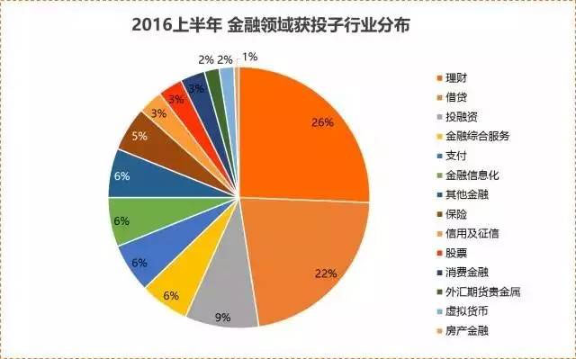

2016年被认为是资本寒冬，同时2016年也是互联网金融监管年，不过行业并非都是水深火热。
下半年已经过去两个月了，环境没有发生变化，但互金领域有特色的项目依然在吸金。那么，资金还在进入哪些领域，获得融资的项目又有哪些特点？
近两个月内网贷领域和类保险领域投资比例增加
某网站发布的2016年上半年互联网金融创业投资数据盘点显示，截止到2016年6月底，共追踪到164起金融领域获投事件，金额约638亿人民币，6起该领域并购，以及2起上市事件。众资本关注更高的仍是理财、借贷和投融资领域。

上半年平均每月有27-28个项目获投。2016年7月和8月，互金领域获投项目分别为29和26个，与上半年的平均数基本持平。两个月共计55个获得融资的互金项目，其中P2P网贷以及网贷相关的项目共计21个，占比38.19%，占据了绝对的大头。
除此之外，其他领域的投资案例数量如下：
保险类8家，含2家互助社群，占比14.55%；
理财类7家，含智能投顾、黄金投资，占比12.74%；
消费金融4家，占比7.28%；
大数据风控3家，占比5.45%；
股票类3家，占比5.45%；
众筹及股权投资3家，占比5.45%；
产业金融2家，占比3.63%；
区块链2家，占比3.63%；
支付类2家，占比3.63%。
与上半年的投资领域相比，最近两个月网贷机构、保险类的投资比例大幅增加，消费金融投资比例有所增加，股票相关领域投融资变化不大，理财、众筹、支付领域的投资比例相应有所下滑。当然，两个月内一些领域的投资案例相对较少，单纯比较数字意义不大。
在大多数人的印象中，网贷在水深火热之中，跑路、欺诈问题不断，来自政府的监管压力也越来越大。但实际上其整体交易规模仍在迅速扩大中。
网贷之家数据显示，2015年，全年网贷成交量达到了9823.04亿元，相比2014年全年网贷成交量(2528亿元)增长了288.57%；2016年上半年，P2P网贷行业累计成交量为8422.85亿元，较之2015年上半年的3006.19亿元，同比增长了180%。
龙头企业业绩也不错。数据显示，2016年Q2，宜人贷净营收7.34亿人民币(1.10亿美元)，同比增长140%；净利润2.61亿人民币(3920万美元)，同比增长226%。在2016年Q1，宜人贷净收入8,507万美元，较去年同期增长187%；实现净利润2,013万美元，较去年同期增长355%。
近期银监会等四部门发布了网贷业务暂行管理办法，虽然在规模上限等方面做了很多限制，但毕竟意味着政策上已经承认网贷的合法性。
市场层面交易量持续增长，政策层面监管层逐步认可，应该构成了投资机构继续青睐网贷平台的投资逻辑。虽然行业鱼龙混杂、泥沙俱下，但行业里的领先者以及创新者还是有投资价值。
保险类领域也持续之前的火热，包括互联网保险平台以及互助项目，仍然是投资圈的热点。
各领域投融资有什么新特点？
网贷
在最近的7-8月，网贷机构持续获得青睐。在投资上，近两个月内的投资案例以A轮及以上为主，相关案例达到14个，包括一个C轮融资和一个B+轮融资，占比达到三分之二。这表明网贷模式正在趋于成熟，投资阶段已经逐步拉后。
另外，在这段时间内，集中出现了上市公司领投P2P网贷的案例，包括万科战略投资鹏金所、云游控股领投银客网C轮、神州泰岳投资沃时贷B轮、乐视领投懒财网B轮、银江股份投资浙金网等，也表明正规网贷机构的投资价值正在更大范围内获得认可，上市公司作为成熟企业入股网贷公司，也正在增强行业的稳定性。
而且这些投资并非简单的财务投资，基本都是战略投资，上市公司通过投资相对成熟的网贷平台切入互联网金融领域，并寻求与网贷的战略协同。
网贷领域较早期的投资主要集中于一些新模式，包括网贷搜索引擎、网贷投资者交流社区以及主打社交理财概念的网贷平台。
就目前来看，网贷模式在互金领域内已经算是成熟的模式，以成熟模式切入网贷，已经没有多大机会。
为网贷生态提供支持的模式则还有一定空间，毕竟整个网贷行业的生态还有待于进一步健全，如果能为网贷生态内各个主体提供可以提升效率的服务，还是会有做大的机会并获得资本关注。
从对接的资产来看，获投的网贷平台主营的贷款项目主要包括房产抵押贷款、汽车质押贷款、供应链金融、应收账款融资等。这几类资产都是近年来在网贷平台比较流行的资产形式。其特点是风险相对较容易控制，金额一般也较高，可以在做好风控的同时迅速扩大平台交易规模，获得资本认可。
但这类资产因为标的融资金额较高，未来将不得不面临痛苦的调整过程。
银监会近期出台的网贷业务暂行管理办法对于借款人的融资规模进行了上限限制，同一自然人在同一网络借贷信息中介平台的借款余额上限不超过人民币20万元，在不同网络借贷信息中介机构借款总额不超过人民币100万；同一法人或其他组织在同一网络借贷信息中介机构平台的借款余额上限不超过人民币100万元，在不同网络借贷信息中介机构平台的借款余额上限不超过人民币500万元。
近两个月内获投的网贷平台基本以超限的融资标的为主，未来需要在12个月内对业务进行调整。
除此之外，7-8月份内有对接城镇化相关资产、新能源产业、个人借款、农业生产相关资产的平台获投，凸显了网贷行业的垂直化程度逐步加深。如果一个平台能深耕某个行业，获得足够的项目资源、数据、经验和风控方式，则投资价值会非常明显。
保险类
两个月内有8家保险类平台获投，包括第三方保险销售平台、保险特卖、保险比价、互助医疗和健康险平台等模式，基本涵盖了除保险定制之外的主流互联网保险创业模式。
投资机构中，既有君联资本、中科招商、英诺天使、达晨创投等知名投资机构，也有亚夏汽车这样的上市公司、产业资本，投资阶段涵盖了天使、A轮、B轮、B+轮，保险特卖、第三方保险销售作为较早出现的相对成熟的模式，领军企业的投资阶段已经进入B轮，而互助、主打健康险的平台还在天使、A轮的阶段。
可以看出，互联网保险为业界广泛看好，获得知名投资机构的投资，模式也比较丰富。从2015年至今，互联网保险一直是创业投资热点，到现在还没有消退的迹象。
消费金融
近年来消费金融一直是互金领域的大热点，近两个月内有四个消费金融的投资案例，涵盖了F轮、B轮、A轮、天使轮。
校园贷依然吸引了投资机构关注，获投案例中，既包括趣分期30亿元F轮融资这样的巨额融资，也有新兴的校园贷领域创业企业。
另外，一些新兴的垂直领域正在受到关注，主打电动车、三轮车等新能源车以及主打打工人群消费分期的消费金融企业也在近两个月内获得了投资。
总体来说，消费金融的热点正逐步从校园贷向其他领域扩散。
理财
理财领域一直持续获得投资机构关注。7-8月份获投的案例为7个，模式主要包括智能投顾、黄金投资理财、理财师工作平台，以及信托、私募、资管等高端理财产品的销售平台等。
与早期主要对接货币基金的理财模式相比，如今的理财领域对接的理财产品愈加丰富，高端理财产品销售平台获得资本认可，模式也越来越多样，除了对接理财产品，也在将理财师群体与理财用户对接。这种模式类似于互联网证券领域的炒股工具对接证券投资顾问，将网络平台作为投顾、理财师的展业平台。
大数据风控
大数据风控是Fintech比较成熟的应用。国内两千多家网贷机构，真正具备大数据资源与分析能力的平台是少数，多数平台仍然沿用传统的风控模式。
在借款人借款上限被锁定、网贷机构被定位为普惠金融，网贷平台的风控模式需要向大数据风控转变，没有大数据能力的网贷机构需要通过第三方技术公司来构建风控能力。这类第三方的大数据风控类公司获得资本关注也就不难理解。
7-8月份，共有三家大数据风控公司获得投资，分布于天使、Pre-A、B轮，表明这类企业广泛受到资本关注，各个轮次的项目资本都在看。
处在早期的项目主要聚焦于信贷业务的大数据风控，处在更高轮次的项目则业务更广泛，涵盖了盗卡、盗账户、钓鱼、木马、薅羊毛、套现等风险的防控。
股票类
7-8月份出现了三例股票类项目投融资案例，模式主要是投资组合工具以及证券投资媒体，分布于天使轮、Pre-A、A轮，都还在较早期的阶段。
这类项目主要价值在于为股民提供策略选股思路和工具，帮助降低股民的操作难度。目前基本都还在圈用户的阶段，离钱比较远，盈利模式的探索将是一个长期的过程。
产业金融
7-8月份出现了两例产业金融领域投资案例，项目模式分别是为物流行业提供代收解决方案，以及为土地流转提供金融支持，都属于通过互联网平台解决传统行业痛点的案例。
在未来产融结合将是互金的重要趋势，而产融结合的形式将不仅局限于供应链金融，通过互联网金融平台助力新兴领域投融资以及为传统行业解决金融痛点的模式都会有发展空间。
其他
7-8月份，支付领域的投资案例有3例，分布于A轮、B轮以及战略投资，项目的模式主要是为跨境电商提供支付结算服务，以及为商家提供微信支付解决方案的项目。投资逻辑也比较好理解，在第三方支付主要场景已经被支付宝、财付通、银联商务、快钱等巨头占据的情况下，获投的支付类项目主要集中在为新兴领域提供支付解决方案的企业。
区块链领域有两个投资案例，项目主要是提供数字资产的登记流转服务，分布于天使、Pre-A轮，印证了区块链还处于应用早期的事实。
众筹及股权投融资领域有三个案例，模式主要是私募股权投融资对接，以及私募股权众筹、收益权众筹和消费众筹的混合平台。